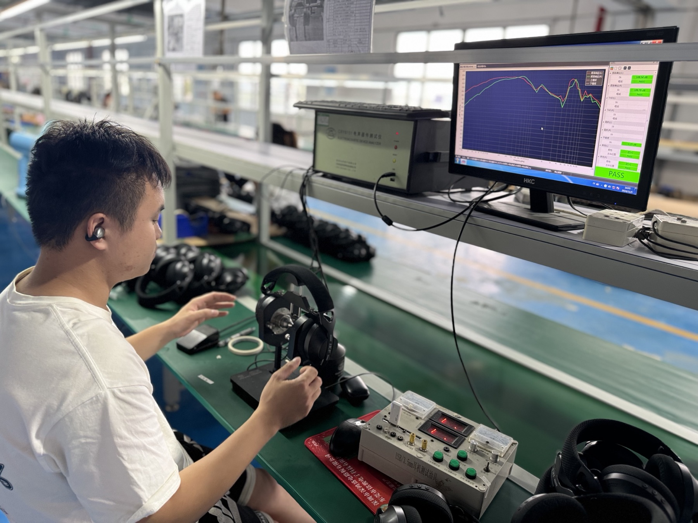
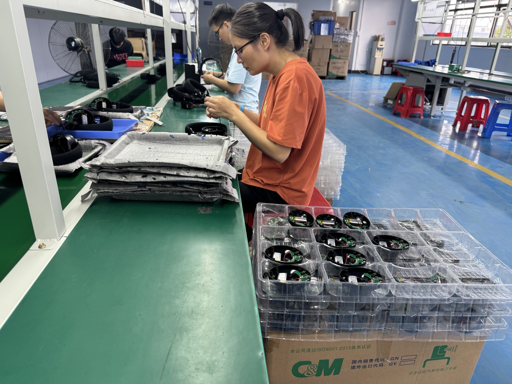
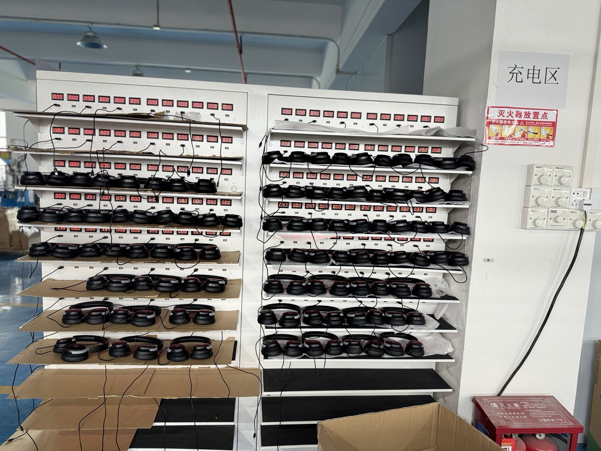
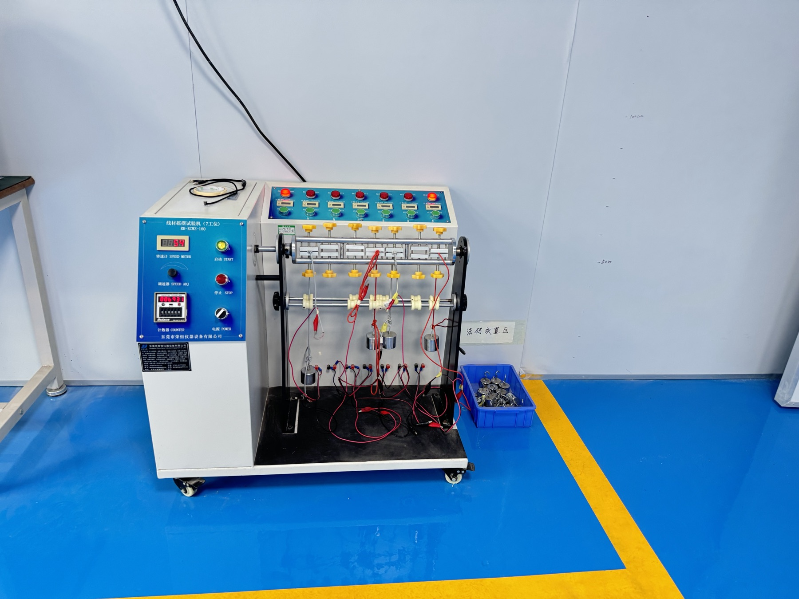
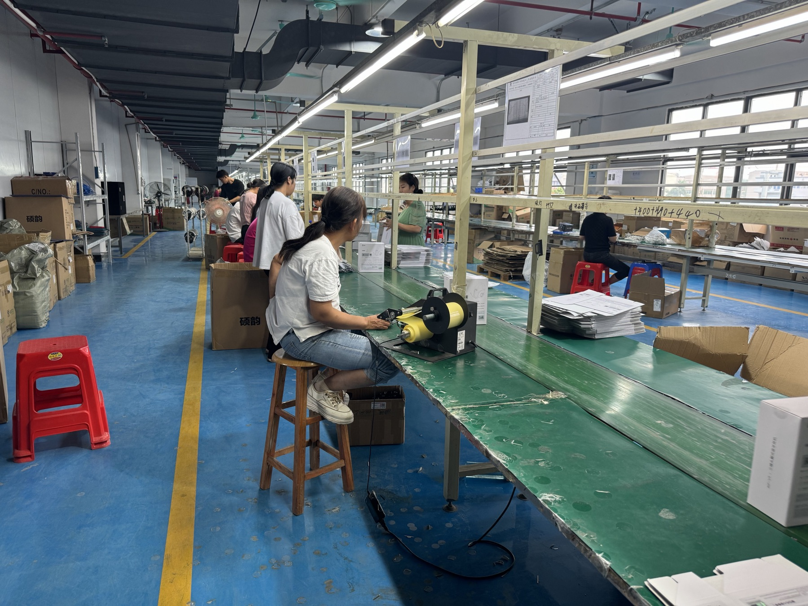
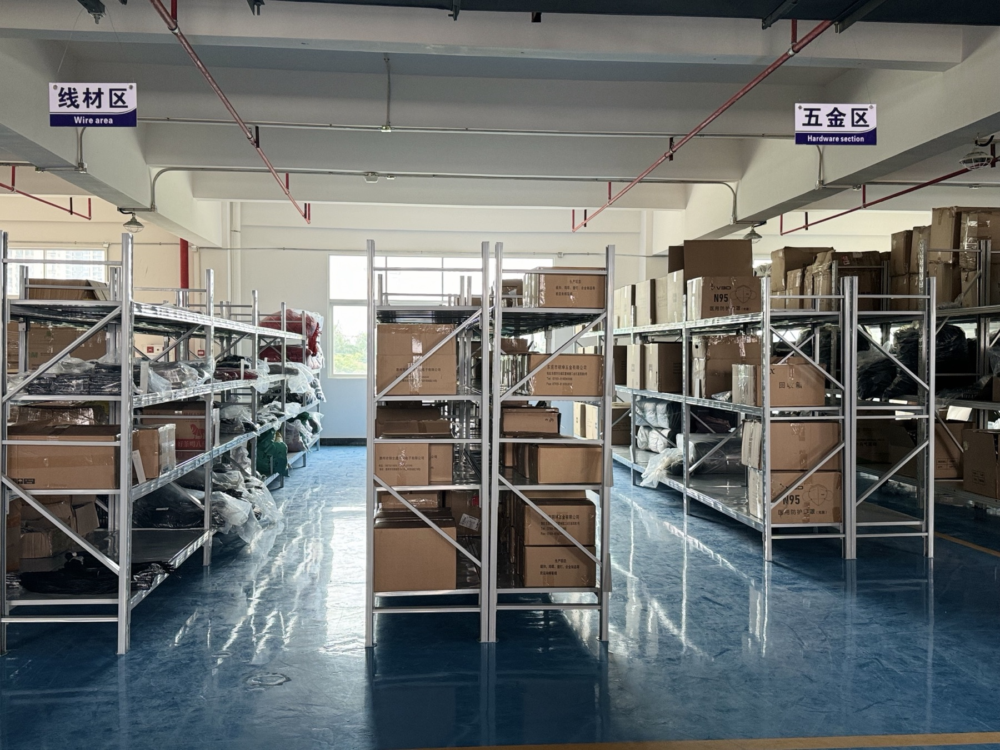

Headset assembly line
Use this reference to ask which visible assembly steps apply to the selected headset version, including headband, earcup, microphone and accessory handling.

Gaming headset sample review
Use this visual route to connect a selected gaming headset model with the questions that matter before approval: assembly, functional checks, charging, cable or receiver details, accessories and packaging. The references below support a clearer buyer discussion; final approval remains tied to the selected sample version.

Buyer outcome
The goal is not to make broad claims from a photo. It is to give a buyer a practical way to ask which visible process applies to the selected model and which points must be confirmed on the actual sample.
Workshop process references
These are real workshop reference photos. They show visible work areas and are intended to guide sample questions. They do not by themselves establish production capacity, certification, inspection scope or a test result.
Use this reference to ask which visible assembly steps apply to the selected headset version, including headband, earcup, microphone and accessory handling.

Ask for model-specific photos or sample notes when you need to review visible finish, boom-microphone placement, controls or assembly details.
Use this view to ask what functional or audio checks are relevant to the selected sample. Confirm the actual review scope separately instead of inferring a result from the station.

For wireless models, ask which charging accessories and charging-related checks should be included in the selected sample review.

For wired models or charging leads, ask whether connector fit, cable direction and any required cable review should be recorded against the sample version.

Use packaging-line references to confirm the carton, inserts, manual, accessory bags, labeling direction and packing-list questions for the approved version.

Ask which cable, receiver, microphone, hardware and accessory items belong to the selected configuration before packaging discussion.
Use this view to prepare questions about outer cartons, inserts and other packing materials for the chosen market and channel.
Sample approval checklist
A consistent sample brief reduces confusion between a model photo, a workshop reference and the version that will actually be reviewed.
Write the model code and confirm whether the selected version is wired, 2.4G wireless, Bluetooth or tri-mode for the intended devices.
Check the visible microphone structure, boom position, mute or volume controls and the questions that need confirmation on the sample.
Record the receiver, cables, charging lead and adapter questions that apply to the selected version rather than a generic product image.
Review headband adjustment, ear cushions, hinge or fork movement, visible surfaces and comfort on the physical sample.
List the detachable microphone, receiver, cables, manual, packaging inserts and any optional item that must be included or excluded.
State the destination market, language, labeling, channel needs and any document questions before quotation or packaging approval.
From image to inquiry
FAQ
Start with the selected model version, connection route, microphone structure, controls, receiver or cable set, charging accessories, packaging and destination-market questions. Confirm the relevant items on the actual sample.
No. The workshop photos on this page are process references. Capacity, certification, inspection scope and individual test results should be confirmed separately for the selected model and project.
Confirm the selected 2.4G, Bluetooth or tri-mode version, target devices, receiver or cable set, microphone behavior, charging accessories, controls, package contents and the sample review scope.
Begin with the model-code index or gaming headset collection, shortlist the relevant direction, then send the model code, market, target devices, channel, quantity range, timing and unanswered sample questions through Sample Request.
Share the model code, target market, sales channel, target devices, connection direction, quantity range, timing, packaging questions and any visible process details you want to confirm.